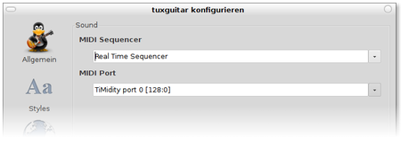

TuxGuitar
Dieser Artikel wurde für die folgenden Ubuntu-Versionen getestet:
Ubuntu 16.04 Xenial Xerus
Zum Verständnis dieses Artikels sind folgende Seiten hilfreich:
 TuxGuitar
TuxGuitar  ist ein Programm zur Erstellung, Betrachtung und Bearbeitung von Tabulaturen und Notenblättern für viele verschiedene Instrumente, wobei es besonders die Gitarre unterstützt. Das in der Programmiersprache Java geschriebene und für verschiedene Betriebssystem-Plattformen entwickelte Programm steht unter der GNU Lesser General Public License (LGPL).
ist ein Programm zur Erstellung, Betrachtung und Bearbeitung von Tabulaturen und Notenblättern für viele verschiedene Instrumente, wobei es besonders die Gitarre unterstützt. Das in der Programmiersprache Java geschriebene und für verschiedene Betriebssystem-Plattformen entwickelte Programm steht unter der GNU Lesser General Public License (LGPL).
TuxGuitar unterstützt von Haus aus unter anderem folgende Programmfunktionen:
Erstellung von umfangreichen, mehrspurigen Tabulaturen:
Auswahl zwischen einer großen Zahl an Instrumenten
Phrasierungsweisen wie Vibrato, Hammering-on, ...
Wiederholungen, verschiedene Wiedergabetempi
Lyrics
Darstellung als Tabulatur und/oder als Noten
Unterstützung für Akkorde
Wiedergabe der Tabulaturen via MIDI-Output
Export der Tabulaturen als MIDI, PDF, Lilypond, MusicXML, ASCII
Import von MIDI- und Tef-Dateien
Unterstützung der Tabulatur-Formate .gp3, .gp4, .gp5, .ptb und .tg
Voraussetzungen¶
TuxGuitar basiert auf Java. Wie man eine Laufzeitumgebung (JRE, ab Version 6) installiert, ist im Artikel Java/Installation beschrieben.
| TuxGuitar (Ausschnitt) |
Installation¶
Zur Installation von TuxGuitar muss folgendes Paket installiert [1] werden:
tuxguitar (universe)
 mit apturl
mit apturl
Paketliste zum Kopieren:
sudo apt-get install tuxguitar
sudo aptitude install tuxguitar
Nach der Installation kann tuxguitar direkt gestartet werden [3].
Soundausgabe einrichten¶
Um die Musik beim Erstellen gleich wiedergeben zu können, muss zusätzlich entweder der MIDI-Sequenzer TiMidity oder das "Java Sound API Plugin" für TuxGuitar eingerichtet werden. Dabei ist normalerweise TiMidity die bessere Variante. Falls diese allerdings nicht funktioniert, kann auf die andere zurückgegriffen werden.

TiMidity¶
Hierzu installiert man das Paket
timidity (universe)
mit apturl
Paketliste zum Kopieren:
sudo apt-get install timidity
sudo aptitude install timidity
Dann wählt man in TuxGuitar unter "Tools -> Settings -> Sound" als "MIDI Port" "TiMidity port 128:n" aus, wobei n für eine Zahl zwischen 0 und 3 steht. Im selben Einstellungsdialog kann man außerdem andere Optionen wie Verhalten, Darstellung und Sprache festlegen. Sollte die Soundausgabe jetzt noch nicht funktionieren, kann es helfen, das System neuzustarten, falls nach der Installation von TiMidity noch nicht geschehen.
Benutzung¶
Beim Start wird ein Takt und eine Spur angezeigt. Mit "Spur -> Spur hinzufügen" lassen sich neue Spuren hinzufügen. Mittels "Spur -> Eigenschaften" lässt sich das Instrument ändern. Hier kann die Spur durch Setzen des entsprechenden Häkchens auch zu einer Percussion-Spur gemacht werden. Über "Anzeigen - Show Matrix" wird ein Fenster geöffnet, in dem man sich die Drumspur zusammenklicken kann.
Bei der modernen Gitarrentabulatur bildet man mit sechs Linien einfach die Saiten des Griffbretts nach. Die Zahlen geben an, welcher Bund der jeweiligen Saite gegriffen werden muss. 0 steht für einen freien Anschlag. Die Länge des Tons kann mit über den Zahlen stehenden üblichen Notenzeichen angegeben werden. Ebenso können Hammer-Ons etc. nachgebildet werden. Mit "Ansicht -> Zeige Griffbrett" bzw. "Ansicht -> Zeige Klaviatur" können ein Gitarren-Griffbrett oder eine Klaviatur angezeigt werden, durch deren Betätigung ( ) die Töne in Tabulatur umgewandelt werden.
) die Töne in Tabulatur umgewandelt werden.
Unter "Komposition -> Tempo" kann das Grundtempo des Stückes eingestellt werden. Über "Wiedergabe -> Start/ Stop" kann das Stück abgespielt werden.
Problembehebung¶
Kein Sound¶
Von ALSA unterstützte Soundkarten benötigen unter Umständen das Tuxguitar ALSA Plugin, um die MIDI-Sounds von Tuxguitar wiedergeben zu können:
tuxguitar-alsa (universe)
mit apturl
Paketliste zum Kopieren:
sudo apt-get install tuxguitar-alsa
sudo aptitude install tuxguitar-alsa
Mit einer Audigy 2 Soundkarte ist unter Ubuntu 10.04 64-Bit das Problem aufgetreten, dass man unter "MIDI Port" TiMidity nicht auswählen kann. Das liegt daran, dass TiMidity nicht richtig starten konnte, weil das Modul snd_seq nicht geladen wurde. Mit folgendem Befehl lädt man das Modul manuell:
sudo modprobe snd_seq
Dann sollte man mit folgendem Befehl TiMidity fehlerfrei starten können:
sudo /etc/init.d/timidity start
Nun sollte man TuxGuitar neu starten und nachsehen, ob man die Einstellung vornehmen kann. Damit das Modul bei jedem Systemstart geladen wird, ist es nötig, eine neue Zeile 'snd_seq' an die Datei /etc/modules anzuhängen:
sudo sh -c 'echo snd_seq >> /etc/modules'
Links¶
911tabs.com
- Verzeichnis von Tabulaturen für unterschiedliche InstrumenteultimateGuitar.com
- umfangreiche Datenbank für Gitarren-, Bass- und Schlagzeugtabulaturen
- Erstellt mit Inyoka
-
 2004 – 2017 ubuntuusers.de • Einige Rechte vorbehalten
2004 – 2017 ubuntuusers.de • Einige Rechte vorbehalten
Lizenz • Kontakt • Datenschutz • Impressum • Serverstatus -
Serverhousing gespendet von